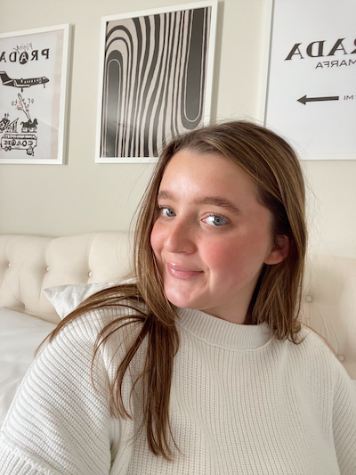

Riley Shook
Contact Information:
Email: rileyhshook@gmail.com
Portfolio
LinkedIn
Summary
Social media and PR professional with agency experience in social media management, influencer marketing, content planning, and execution. Proven ability to successfully handle multiple clients and manage multiple social media accounts and concurrent projects.
Education
James Madison University
B.S.in Media Arts and Design:
Concentration: Creative Advertising
Minors: Educational Media and British Media and Communications
August 2021 - December 2024
Achievements
GPA: 3.5
Study Abroad: JMU Study Abroad Program, Semester in London (Summer 2023)
Award: JMU 2023-2024 Sorority Woman of the Year
Skills
- Tools: Adobe Photoshop, InDesign, Asana, Canva, Instagram, Meta Business Suite, Slack, Smartsheet, Sprout, Squarespace, TikTok, WordPress
- Competencies: Branding, influencer correspondence, print design, campaigns, community/social media management, content creation, copywriting, UX design
Work Experience
Social Media Associate
Rivers Agency, Chapel Hill, NC | July 2024 - Present
Clients: Revel Ostomy (Arnasi), Fenton, University Place, Waverly Place, Wake Radiology, Wheeler Yachts
- Developed and executed comprehensive social media strategies, aligning with client goals and industry trends.
- Managed social media calendars to ensure consistent brand voice and messaging across platforms.
- Created engaging multimedia content, enhancing audience engagement.
- Cultivated a loyal online community through daily community management and detailed weekly client reports.
- Researched and collaborated with influencers, overseeing product preparation, shipping, and press release distribution.
Director of Public Relations
Alpha Sigma Tau Sorority, Harrisonburg, VA | November 2023 - Present
Brands: Good Molecules, Lesser Evil, Mad Hippie, Mane Hair, Misfits, Red Bull, LaCroix, Poppi
- Grew Alpha Sigma Tau, Psi Chapter’s Instagram account to over 3k followers with an 85% reach rate.
- Directed and produced content shoots, creating visually appealing graphics and copy for events.
- Managed outreach efforts, coordinating product gifting with brands for recruitment events.
- Currently serving as Assistant Director of Membership Selection; previously served as Director of Fundraising in 2023.
Social Media Analytics and Branding Intern
Everybody at Once, Remote | September - December 2023
Clients: Searchlight Pictures, YouTube, Google
- Conducted market research on trends and engagement strategies for data-driven social media campaigns.
- Assisted in community management across nine social channels with follower counts ranging from 2k to 220k.
- Researched cultural events and social media trends, providing clients with social-first examples to enhance campaign strategies and audience engagement.